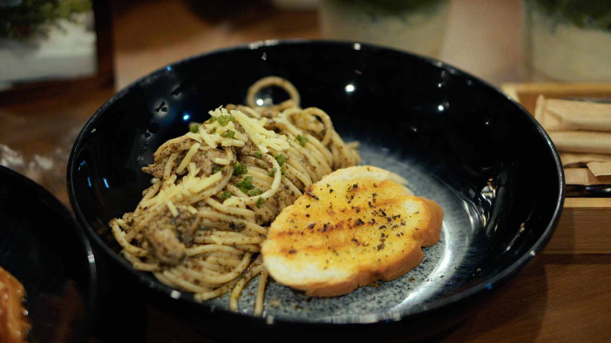

Forkful
Recipes
Saved
Sign in

Weeknight lemon pasta
25 min · Serves 4 · Easy
Ingredients
200g spaghetti
2 lemons, zested
3 cloves garlic
40g parmesan
Method
1
Boil the pasta in well-salted water.
2
Warm garlic in olive oil; add zest and juice.
3
Toss with pasta, parmesan and basil.